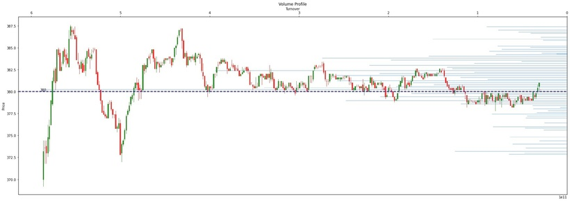
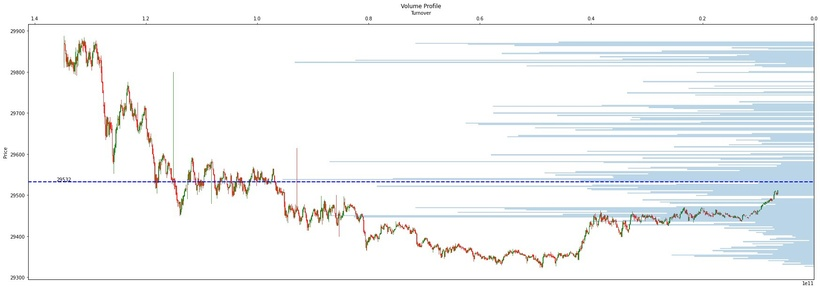

成交量分佈圖（Volume Profile) 係一種
高級圖表研究，以指定嘅價格水平顯示指定嘅時間內嘅交易活動。咁點解呢個圖會對交易者有幫助呢？就係因為成交量分布圖可以容易顯示出受市場青睞嘅價格以及被市場忽略嘅價格，從而為交易者提供有關價格嘅支持位/阻力位
個股嘅成交量分布圖喺大部份市面上嘅報價程式都係需要付費嘅，以上述嘅python 例子就會教你如何上港交所(HKEX)自動下載即時股票或期貨1分鐘數據，再繪製個股或期貨嘅成交量分布圖，從而幫你搵到即市支持位或阻力位
(POC: Point of control)
只要係程式輸入想下載嘅股票或期貨數據（e.g. 3690.HK) 程式就會自動幫你上港交所下載最新即日1分鐘數據，如果想繪製多於一日嘅成交量分布圖，就需要每日下載港交所嘅1分鐘數據，或者到其他免費或收費嘅報價程式api下載
👇🏻👇🏻Python Code (Patrons Only)👇🏻👇🏻